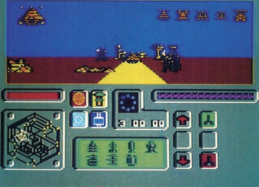
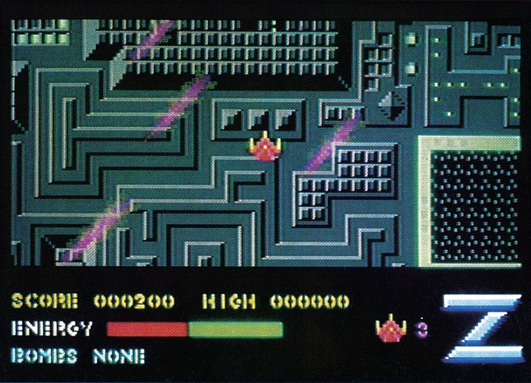
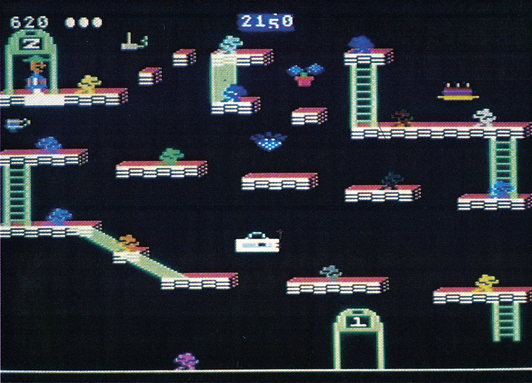
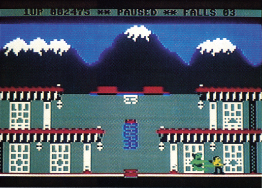
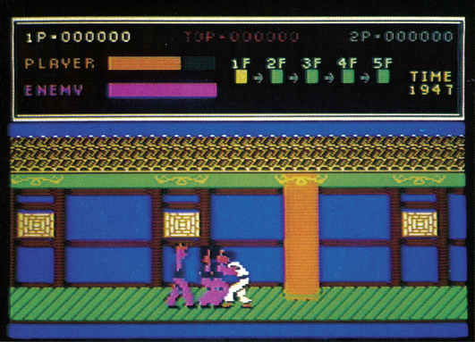
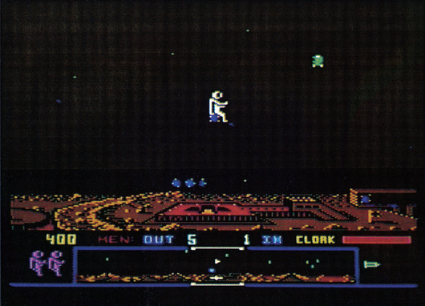
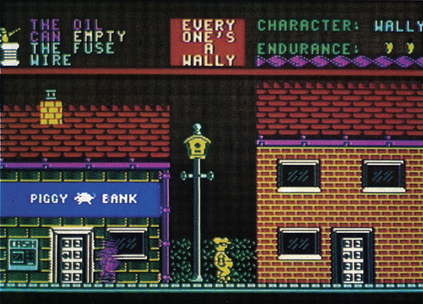
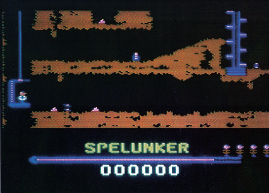
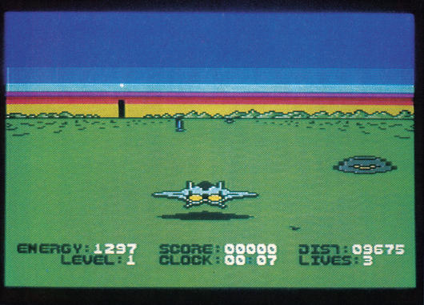
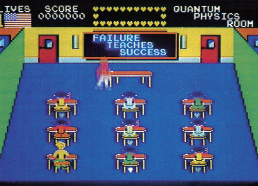

Aus alt mach neu
Zu Weihnachten steht der heißersehnte Computer unter dem Christbaum. Nun fehlt eigentlich nur noch die Software. Hier bieten sich Spielesammlungen an, die für wenig Geld mehrere gute Spiele bieten. Wir haben die besten unter die Lupe genommen.
Wie macht man aus einem zwei Jahre alten Spiel den neuen Weihnachtshit? Ganz einfach, man packt es zusammen mit ein paar anderen Spielen auf eine Kassette und verkauft das Ganze als Spielesammlung. Aber Vorsicht! »Zwei Jahre alt« sollte man nicht mit »seit zwei Jahren veraltet« verwechseln. Denn viele der Programme, die sich auf den Spielesammlungen finden, sind sehr gut und lohnen sich.
Da die Spielehersteller erkannt haben, daß sich gerade viele Gelegenheits-Käufer von Spielen für die Spielesammlungen interessieren, gibt es dieses Jahr einen ganzen Schwung dieser Pakete. Aus dem riesigen Angebot haben wir uns einige Perlen herausgepickt.
Aus Platzgründen können wir nicht für jedes einzelne Spiel unseren bewährten Wertungskasten drucken. Deswegen haben wir uns extra für diesen Artikel ein neues System ausgedacht. Zu jeder Sammlung finden Sie einen Kasten, in dem alle Spiele mit einer groben Gesamtwertung aufgeführt sind. Hier vergeben wir Noten von »gut« (+) über »durchschnittlich« (o) bis zu »mäßig« (-). Außerdem finden Sie eine ungefähre Preisangabe. Die Spielesammlungen dürften bei allen größeren Software-Händlern erhältlich sein; hier hilft auch ein Blick in unseren Anzeigenteil.
Und nun Vohang auf für unsere Spiele-Sammlung:
| The Best of Beyond | |
|---|---|
| Shadowfire | + |
| Enigmaforce | + |
| Quake minus One | o |
| Psi Warrior | — |
| 39 Mark (Kassette) | |
»The Best of Beyond« enthält zwei Spiele, die im 64'er schon einmal ausführlich getestet wurden: »Shadowfire« und »Enigmaforce« sind Adventures, die rein mit Bild-Symbolen gesteuert werden und bei denen auch die Action nicht zu kurz kommt. »Quake minus One« ist ein Strategiespiel, bei dem ein ganzer Planet vor der Vernichtung gerettet werden muß. »Psi Warrior« ist schließlich ein recht müdes und ziemlich altes Action-Spiel mit strategischer Note.

| Alligata Action | |
|---|---|
| Guardian | + |
| Hypercircuit | o |
| Rocket Roger | o |
| Waterski 3D | — |
| 25 Mark (Kassette) | |
Eine der preiswertesten Spielesammlungen ist »Alligata Action«. Hier findet man als Glanzpunkt die Defender-Version »Guardian«, die ziemlich schnell und recht schwer ist. Auch »Hypercircuit«, das im Inneren eines Computer spielt, und »Rocket Roger« sind gehobene Actionspiele. Lediglich »Waterski 3D« kann überhaupt nicht überzeugen.
| Zzap Sizzlers (II) | |
|---|---|
| Monty on the Run | o |
| Z | o |
| Starquake | o |
| Bounder | o |
| 39 Mark (Kassette) | |
Diese Sammlung enthält vier Programme, die von der englischen Zeitschrift »Zzap« mit einem »Sizzler« ausgezeichnet wurden. »Monty on the Run« und »Starquake« sind zwei typische Action-Adventures, die durch witzige Grafik auffallen, während »Bounder« ein Geschicklichkeitsspiel und »Z« ein reines Action-Spiel mit viel Geballer ist.

| Platform Perfection | |
|---|---|
| Bruce Lee | + |
| Bounty Bob | + |
| Ghostchaser | o |
| Zorro | — |
| 39 Mark (Kassette) | |
Nur mit Plattform-Spielen beschäftigt sich »Platform Perfection«. Hier findet man zwei Klassiker des Genres: Das Karate-Spiel »Bruce Lee«, bei dem man möglichst tief in einen Tempel eindringen muß, und »Bounty Bob strikes back«, das zwar eine mäßige Grafik, aber viel Spielwitz hat. »Ghostchaser« ist ein durchschnittliches Spiel dieses Genres und »Zorro« eine etwas verunglückte Umsetzung des alten Mantel- und Degen-Helden.


| They Sold a Million (3) | |
|---|---|
| Fighter Pilot | + |
| Daley Thompsons Supertest | o |
| Ghostbusters | o |
| Kung Fu Master | — |
| 39 Mark (Kassette) | |
Auf dieser Sammlung findet man Spiele, die in England wegen besonders großer Verkaufszahlen auffielen. »Daley Thompsons Supertest«, ein Sportspiel, wurde bisher noch nicht für den C 64 veröffentlicht. »Fighter Pilot« ist eine recht gute Flugsimulation, »Kung Fu Master« die Umsetzung eines Karate-Automaten. Vielen Lesern bekannt ist »Ghostbusters«, das erfolgreichste Spiel des Jahres 1985.

| Arcade Action | |
|---|---|
| Spy Hunter | + |
| Zaxxon | o |
| Tapper | o |
| Buck Rogers | — |
| 39 Mark (Kassette) | |
Vier ältere Spielhallenadaptionen werden in »Arcade Action« vorgestellt. Mit einem Super-Auto in den Reifenspuren von James Bond geht es in »Spy Hunter« recht hektisch zu. Viele Gegner müssen von der Straße geschubst oder abgeschossen werden. »Zaxxon« gehört immer noch zu den besten Action-Spielautomaten, konnte als Heimcomputerspiel aber nicht so recht überzeugen. Die 3D-Grafik von Zaxxon ist aber technisch fast perfekt. »Tapper« ist ein recht niedliches Spiel, bei dem man die Rolle eines Barmanns übernimmt und »Buck Rogers« ist ein ziemlich primitives 3D-Action-Spiel, das schnell langweilig wird.
| Shoot em Up | |
|---|---|
| Dropzone | + |
| Super Zaxxon | o |
| Fort Apocalypse | o |
| Blue Max 2001 | — |
| 39 Mark (Kassette) | |
Viermal Baller-Action findet man auf »Shoot em Up« (übersetzt: Schieß sie ab!). Dabei ist die Defender-Variante »Dropzone« der klare Renner im Spielesammlungs-Programm. Dagegen sind die anderen Spiele nur durchschnittlich. Eines der meistgespielten Programme, »Fort Apocalypse«, sollte als Software-Klassiker in keiner Sammlung fehlen, obwohl es heutzutage schon etwas veraltet ist.

| Now Games 3 | |
|---|---|
| Sorcery | + |
| View to a Kill | o |
| Nick Faldo | o |
| Everyone's a... | o |
| Codename MAT II | — |
| 29 Mark (Kassette) | |
Bei »Now Games 3« kriegt man eigentlich am meisten Spiel fürs Geld. Denn »View to a Kill« (das Spiel zum gleichnamigen Bond-Film) besteht sogar aus drei völlig unabhängigen Spielen, so daß man gleich ganze sieben Spiele auf der Kassette hat. »Everyone's a Wally« ist ein sehr witziges Action-Adventure, bei dem man mehrere Figuren steuern muß, »Sorcery« gehört ebenfalls diesem Genre an. »Nick Faldo plays the Open« ist ein Golfspiel, das inzwischen von einigen anderen Golf-Programmen übertroffen wurde, und »Codename MAT II« ist ein völlig verunglücktes Weltraum-Action-Spiel.

| Broderbund Blasters | |
|---|---|
| Karateka | + |
| Choplifter | + |
| Spelunker | + |
| Stealth | o |
| 39 Mark (Kassette) | |
Eine Sammlung nur mit guten Spielen ist »Broderbund Blasters«. Zwei Action-Spiele, »Stealth« und »Choplifter«, wechseln sich mit einem Karate-Spiel, »Karateka«, und einem Platform-Spiel, »Spelunker«, ab. Dabei verfehlt »Stealth« nur knapp das Pluszeichen in der Wertung. Die Grafik reicht von »durchschnittlich« bis »sehr gut«. Insgesamt sieht man dieser Sammlung kaum an, daß manche Spiele schon drei Jahre alt sind!


| Big 4 from Durell | |
|---|---|
| Combat Lynx | + |
| Critical Mass | + |
| Saboteur | o |
| Turbo Esprit | — |
| 39 Mark (Kassette) | |
Die großen 4 von Durell sind zum größten Teil Action-Spiele, die einen Touch Simulation (»Combat Lynx«), Karate-Spiel (»Saboteur«) oder Auto-Rennen (»Turbo Esprit«) haben. »Turbo Esprit« wurde übrigens vorher noch nicht für den C 64 veröffentlicht. Der Spieler ist mit einem Super-Auto auf der Jagd nach gefährlichen Drogenschmugglern, die wiederum dem Spieler ans Leder wollen.
| Konami Hits | |
|---|---|
| Hypersports | + |
| Mikie | o |
| Yie Ar Kung Fu | o |
| Ping Pong | o |
| 39 Mark (Kassette) | |
Nur Spielhallen-Umsetzungen findet man auf dieser Kassette. Darunter befinden sich »Hypersports«, ein schönes Sportspiel mit verschiedenen Disziplinen, »Ping Pong«, eine aufgemotzte Version des Software-Klassikers, »Yie-Ar Kung-Fu«, ein Karate-Spiel, und »Mikie«, ein brandneues Programm für den C 64, bei dem ein Junge einige Abenteuer in der Schule bestehen muß.

Wie Sie sehen, ist das Angebot auf dem Spielesammlungs-Markt sehr groß und sicherlich ist auch für Sie die richtige Sammlung dabei. Doch bevor Sie jetzt in ein Geschäft laufen und blind irgendwelche Sammlungen kaufen, ein heißer Tip: Lassen Sie sich die Programme ruhig unverbindlich vorführen. Sicherlich schmerzt bei einer Sammlung der Verlust von vierzig Mark nicht allzusehr. Doch gefällt Ihnen eine Sammlung wirklich nicht, können Sie immer noch auf eine andere zurückgreifen.
(bs)